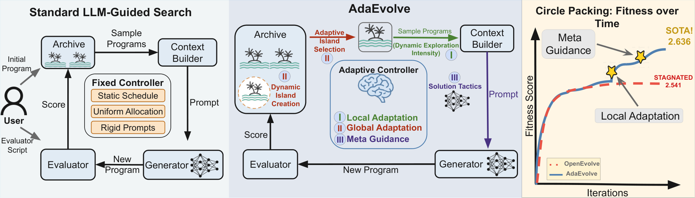
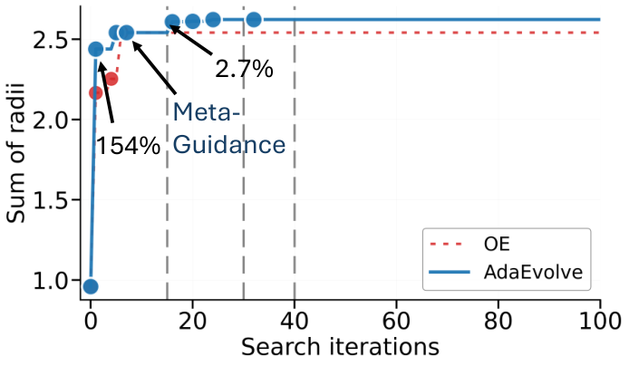

AdaEvolve: Adaptive Control for LLM-Driven Zeroth-Order Optimization
Paper: arXiv 2602.20133v1 [cs.NE], 23 Feb 2026, CC BY 4.0. Mert Cemri*, Shubham Agrawal*, Akshat Gupta, Shu Liu, Audrey Cheng, Qiuyang Mang, Ashwin Naren, Lutfi Eren Erdogan, Koushik Sen, Matei Zaharia, Alex Dimakis, Ion Stoica — UC Berkeley. Code claimed at github.com/skydiscover-ai/skydiscover. Grounded in the full arXiv HTML including appendices and the result tables read with their bold markers.
TL;DR
- The thesis is a mismatch: in LLM-guided evolutionary search the mutation operator is sophisticated and the controller around it is dumb — static schedules, uniform allocation, rigid prompts. The fix is one accumulated improvement signal \(G_t\), an EMA of squared normalized fitness improvements standing in for Adam's second moment, driving three levels: local exploration intensity, bandit compute routing across islands, and LLM-generated "solution tactics" when progress stalls.
- The payoff is configuration elimination — the user supplies only a model name and an iteration count. The motivating anecdote is damning for the incumbent: OpenEvolve "fails to converge unless a human operator manually stops the run after 100 iterations and restarts it with a 'refinement' configuration."
- Across 185 problems (6 AlphaEvolve math, 7 ADRS systems, 172 Frontier-CS) with identical hyperparameters: circle packing (square, N=26) hits 2.63598308, above AlphaEvolve's 2.63586276 and the human 2.634; Frontier-CS mean 61.33 vs OpenEvolve's 50.75, against 20.64 for single-call GPT-5 whose median is 0. Meta-Guidance matters most in ablation.
Why this matters
AdaEvolve does not evolve the artifact's domain and does not rewrite harness code: it evolves the search procedure's own hyper-policy. Candidate programs remain the artifact; what changes over a run is the controller wrapped around the mutation operator — exploration intensity inside an island, compute routing across islands, the strategic tactic injected into prompts. Everything that used to be hand-written configuration becomes a closed-loop function of one scalar. In the operational sense that is harness optimization: the harness's policy is the optimized object, even though no harness source is edited and the controller never adapts itself.
That framing makes configuration elimination — the user supplies a model name and an iteration count — the paper's real claim, and an uncomfortable one for harness search: a large share of what an evolved harness appears to discover may be schedule tuning obtainable online for free. Frontier-CS moves 50.75 → 61.33 on allocation alone, and the variance collapse (±.083 → ±.001) is the part most likely to generalize. The portable primitive is fitness-improvement history as a zeroth-order gradient proxy, useful wherever the refine-or-diversify question arises with no usable gradient over discrete program space.

Figure 1. Left: the standard loop, where a user hand-writes a fixed controller (static schedule, uniform allocation, rigid prompts). Center: the adaptive controller driving island selection (II), exploration intensity (I), and solution tactics (III). Right: OpenEvolve stagnates at 2.541 while AdaEvolve reaches the 2.636 SOTA.The core idea
Formally: maximize \(\mathcal{F}: \mathcal{P} \to \mathbb{R}\) over a discrete space of executable programs under budget \(B\), with search distributed across a dynamic set of \(K\) islands, each holding an archive \(D_k\). Every island runs the same four-step cycle — select a parent, mutate with an LLM, evaluate, insert and update state. The novelty is entirely in the state updates.
One signal suffices for three decisions because stagnation is scale-free. Normalize each improvement by the current best, square it, decay it, and you get a volatility metric on the trajectory that answers three questions at three timescales: explore or exploit now, which island gets the next unit of compute, and has the search run out of ideas.
How it works
Level 1: local adaptation. When a mutation yields child fitness \(f'\) on island \(k\) with local best \(f^*_k\):
\(\delta\) is the relative fitness gain, floored at zero so non-improvements contribute nothing; \(G\) is its exponentially decayed second moment with decay factor \(\rho \in [0,1)\), normalized by \(f^*_k\) to stay scale-invariant across objectives. During stagnation \(\delta_t = 0\), so \(G_t^{(k)} = \rho G_{t-1}^{(k)}\) — that geometric decay is the stagnation detector. \(G\) then sets the exploration probability:
\(I_t^{(k)} \in [0.1, 0.7]\) is the probability of exploring this iteration. Note the inverse relationship: productive islands explore less. High \(G\) drives \(I \to 0.1\); \(G \to 0\) drives \(I \to 0.7\), forcing diversification with no manual restart threshold. The sampled mode changes two things at once — exploration draws parents uniformly with diverse inspirations and a prompt asking for orthogonal solutions, exploitation draws from the top quartile with the highest-fitness inspirations and a prompt asking for refinements — coupling selection pressure and prompt semantics in one knob.
Level 2: global adaptation. Islands are bandit arms, which exposes poor island bias: local \(\delta\) as bandit reward systematically favours bad islands. An island at fitness 100 finding +10 yields \(\delta = 0.10\), one at fitness 1 finding +0.5 yields \(\delta = 0.50\), so the bandit chases the second despite the first producing ten times the absolute value. The fix normalizes the bandit reward globally while the intensity signal stays local:
\(r\) measures improvement against the best fitness anywhere, so "a unit of improvement is valued equally regardless of which island produces it"; \(R\) and \(V\) are decayed cumulative reward and visit count. That deliberate local/global asymmetry is the paper's subtler contribution. Selection is UCB over the decayed statistics:
\(n_k\) is the raw visit count, \(N = \sum_k n_k\), \(C = \sqrt{2}\). Because \(R\) and \(V\) both decay by \(\rho\), the ratio "reflects recent productivity rather than lifetime productivity."
Two structural mechanisms sit alongside the bandit. Ring migration every \(M\) iterations sends island \(k\)'s best to \((k+1) \bmod K\); migrated programs update the recipient's \(f^*_k\) and \(G^{(k)}\) — keeping intensity adaptation correct — but not its UCB statistics, "since the receiving island did not generate the improvement." That is the right accounting, and exactly what an implementation gets wrong. Dynamic island spawning fires when \(G_t^{(k)} \le \tau_S = 0.02\) for all islands.
Level 3: Meta-Guidance. When numerical adaptation fails, the diagnosis is that "the code is optimized, but the underlying algorithm is suboptimal" — a conceptual rather than parametric local optimum. Triggered at \(G_t^{(k)} \le \tau_M = 0.12\) across all islands, AdaEvolve invokes a separate LLM on the problem specification, the evaluator code and recent failed attempts, asking what qualitatively different strategy to try. The output is a solution tactic — "switch from greedy selection to dynamic programming" — injected into subsequent mutation prompts. Since \(\tau_M > \tau_S\), the system reaches for a strategic rethink before more population diversity.
# Algorithm 1 — AdaEvolve main loop (condensed, with UpdateState inlined)
Given: initial program p0, evaluator F, budget T, starting islands K, LLM M
for k = 1..K: G[k], R[k], V[k], n[k] <- 0; f*[k] <- F(p0); D[k] <- {p0}
f*_global <- F(p0); Tactics <- {}
for t = 1..T:
k <- SelectIsland(t) # Level 2: UCB over R[k]/V[k] (Eq. 6)
I <- I_min + (I_max - I_min)/(1 + sqrt(G[k] + eps)) # Level 1 intensity (Eq. 3)
if Uniform(0,1) < I: # explore: diversity
parent <- uniform(D[k]); inspires <- most-diverse(D[k])
else: # exploit: fitness
parent <- sample(top-quartile(D[k])); inspires <- highest-fitness(D[k])
prompt <- ContextBuilder(parent, inspires, Tactics)
p' <- Mutate(M, prompt); f' <- F(p'); D[k] <- D[k] + {p'}
r <- 0
if f' > f*[k]:
delta <- (f' - f*[k]) / (|f*[k]| + eps) # local normalization
G[k] <- rho*G[k] + (1-rho)*delta^2 # Eq. 2
r <- (f' - f*[k]) / (|f*_global| + eps) # global normalization (Eq. 4)
f*[k] <- f'; f*_global <- max(f*_global, f')
else:
G[k] <- rho*G[k] # decays during stagnation
R[k] <- rho*R[k] + r; V[k] <- rho*V[k] + 1; n[k] <- n[k] + 1
if all G[j] <= tau_M and no active tactic: Tactics <- GenerateTactics() # Level 3
if all G[j] <= tau_S: spawn new island seeded from a random archive program
every M iterations: ring-migrate best programs (updates f*, G — never UCB stats)
return argmax_p F(p) over all archives
Results
Setup. GPT-5 and Gemini-3-Pro backbones, identical evaluators, T = 100 iterations, mean ± std over three runs; Frontier-CS uses GPT-5 at 50 LLM calls. Baselines: GEPA, ShinkaEvolve, OpenEvolve, with AlphaEvolve and human results as references.
Mathematical optimization (Table 1). Circle packing (square, N=26) reaches 2.636 best / 2.632 ± .003 avg on Gemini-3-Pro against human 2.634 and AlphaEvolve 2.635, full precision 2.63598308 vs 2.63586276; the rectangle variant reports 2.36583237 vs 2.36583213. Heilbronn triangles reaches 0.036, matching human 0.0360 but below AlphaEvolve's 0.0365; MinMax Distance hits 0.2404, above human (0.2399) and AlphaEvolve (0.2398). That is the "4/6" claim — Heilbronn convex (0.029 vs human 0.0306) is a loss. The gap to baselines is largest on GPT-5, where 2.629 ± .001 towers over OpenEvolve's 2.531 ± .018 and ShinkaEvolve's 2.464 ± .083; the order-of-magnitude tighter variance is arguably the more meaningful result, and OpenEvolve's 2.541 ± .000 on Gemini is a hard plateau.
Systems (Table 2, seven ADRS tasks). Large margins: Telemetry .952 vs human 0.822; Prism 26.37 vs 21.89; TXN 4,348 vs 2,725; NS3 131.8 vs 69.0. Cloudcast is the exception, where human SOTA (626.2) beats AdaEvolve's 637.1 (lower is better). Gains concentrate on "sparse or bursty improvements."
Frontier-CS (172 problems, 50 LLM calls). AdaEvolve 61.33 mean / 75.15 median; OpenEvolve 50.75 / 56.37; ShinkaEvolve 47.79 / 46.22; GEPA 43.04 / 33.68; single-call GPT-5 20.64 / 0.0. The median of zero is the most informative number: over half of one-shot attempts score nothing, so on hard open-ended problems the scaffold is the difference between working and not.

Figure 5(b): OpenEvolve (red, dashed) flatlines near 2.541 from around iteration 7. AdaEvolve's +154% jump at iteration 1 comes from random initialization; the labelled Meta-Guidance intervention at iteration 15 injects the SLSQP tactic producing the +2.7% breakout.Ablations (Table 4, circle packing / signal processing). Full: 2.6294 ± 0.003 / 0.7178 ± 0.019. Removing Meta-Guidance is worst on both — 2.5213 ± 0.028 and 0.5476 ± 0.011. Removing local adaptation costs more on circle packing (2.5906) than removing adaptive island selection (2.6180); on signal processing the ordering flips (0.6807 vs 0.619). Fixed island counts also hurt (2 islands: 2.6187 / 0.5512; 5 islands: 2.5891 / 0.6085). The case studies show the mechanism: circle packing stalls from iteration 7 to 15 at 2.5414, then Meta-Guidance injects SLSQP over circle positions and iteration 16 jumps to 2.6095, while "runs without meta guidance remain stuck near 2.514." Signal processing instead shows the intensity schedule — early \(G \approx 0\) forces exploration, then rising \(G\) shifts to refinement and a Savitzky–Golay mutation at iteration 14 produces +14.6%, reaching 0.7177 (+43.8% in 64 iterations).
ARC-AGI-2 (Appendix C). 120 instances, matched budget of 30 LLM calls per task, evolution on train and evaluation on test: GPT-5 42% → 49%, Gemini-3-Pro 44% → 50% — flagged as exploratory, since "standard ARC evaluation assumes a strict train–test separation, whereas evolutionary frameworks typically perform adaptation at test time."
How it connects
- darwin-godel-machine — the hub of the harness thread, and the clearest statement of what AdaEvolve is not. DGM evolves the solver by rewriting its own code and archiving every functioning variant; AdaEvolve evolves solutions while a fixed, hand-written controller schedules the search. It inherits the island lineage (AlphaEvolve → OpenEvolve), not the self-modification one.
- harness-generalization — the closest methodological sibling and the comparison AdaEvolve should have faced: 30 budget-matched harnesses, 3.1M rollouts, no universally superior harness, adaptive allocation driven by early progress. Level 2 is that idea moved inside a single run, UCB over islands instead of pruning over harnesses; Berkeley also supplies the hypothesis testing three runs lack.
- rethinking-harness-evolution — the budget discipline this paper partly satisfies and partly evades: it matches iteration counts but never runs the repeated-sampling control, reporting single-call GPT-5 (20.64) and not best-of-50 GPT-5, the correct comparator at a 50-call budget. The evaluator is an executable scorer, so that selection would be free and perfect; its absence leaves 61.33 conflating adaptive search with repeated sampling under a verifier.
- meta-harness and harness-handbook — the opposite bet on feedback bandwidth: raw-trace access (~10 MTok/iteration) beats scores-only 50.0 vs 34.6, while AdaEvolve is scores-only by construction. That Meta-Guidance — the one component allowed to read the problem spec and evaluator source — is its highest-value ablation is quiet evidence for the other side; Handbook makes the structural version of the point, that what the optimizer can see bounds what it can change.
- darwinx-harness-evolution, living-harness, recursive-harness-self-improvement, evoharness-rl — the harness-as-object thread AdaEvolve stops short of: lineage populations under a preserve-and-extend contract, gated commits into persistent memory and a state graph, prompt-level specs of the agent loop, and — closest of all — EvoHarness-RL, which trains the meta-action policy AdaEvolve hand-writes.
- darwinian-evolver — the perfect foil: a static scaffold whose CLI exposes exactly the knobs AdaEvolve exists to eliminate. Their ARC numbers are not comparable (Imbue: 95.1% with Gemini 3.1 Pro at $8.71/task on a hand-tuned specification; AdaEvolve: 50% at 30 calls on a generic one), and that gap is the lesson — problem specification still dominates controller design. Sibling systems: adaexplore, whose fixed \(p_{\text{large}}\) and per-level \(c_{\mathrm{expand}}\) are precisely the static schedule this replaces; aide2-rsi-evidence, whose discovered bandit-over-lineages policy is strikingly close to Level 2; asi-evolve, coral-multi-agent-evolution, saga-goal-evolving, env-generator-dynamics. Background: AlphaEvolve, ShinkaEvolve, GEPA, FunSearch.
Critical take
The title sells adaptive scheduling; the ablation says the winning ingredient is a prompt. Removing Meta-Guidance is the worst single ablation on both benchmarks — 2.5213 against the full 2.6294 on circle packing, 0.5476 against 0.7178 on signal processing — worse than removing local adaptation, adaptive island selection, or any fixed island count. What breaks the plateau is calling a second LLM on the problem spec, the evaluator source and recent failures and asking for a different strategy; the appendix's tactic catalogue (SLSQP, multi-start, LP relaxation, Savitzky–Golay) reads as a menu of competent human moves. A paper framed as zeroth-order control theory is really about knowing when to ask the model for a new plan.
That same component is where the compute accounting leaks. Meta-Guidance invokes a separate long-context LLM call, and the paper never says whether those count against \(T\); if they do not, the flagship method consumes strictly more compute than the baselines it is "matched" against, at exactly the component the ablation shows matters most. Budget is otherwise reported purely as iteration counts, with no tokens, dollars or wall-clock — and iterations are not token-equivalent even within a run.
The headline math wins are thinner than the abstract suggests. Circle packing (rect) is 2.36583237 vs 2.36583213, a relative margin near \(10^{-7}\) — convergence-tolerance territory for an SLSQP-solved packing; the square variant's is \(4.6\times10^{-5}\). The robust results (variance collapsing from ±.083 to ±.001, Frontier-CS 50.75 → 61.33) are far more persuasive than a fourth decimal place, and three runs — better hygiene than most of this literature — is still thin for margins that small. Calling \(G_t\) a "gradient analogue" is also loose: the resemblance is to Adam's EMA bookkeeping, not its semantics.
Two claims are contradicted by the paper's own tables. The prose says "Across all problems in Table 1, AdaEvolve achieves the best results over other open-source baselines," but on Signal Processing with Gemini-3-Pro GEPA wins on average and best (0.617 ± .075 / 0.680 vs 0.593 ± .009 / 0.603) — the paper's own bold formatting marks GEPA the winner. Table 2's "winning on all seven tasks across both backbones" is likewise contradicted by Gemini Telemetry, where OpenEvolve's .954 is bolded over AdaEvolve's .953. And the most damaging admission is a throwaway sentence: "Note that we ran longer (150 total LLM calls), GEPA also reaches 2.63598 in Circle Packing (square)." The flagship result is a sample-efficiency claim, not a capability claim. The zero-configuration pitch is separately undercut: every threshold is given except \(\rho\), the decay factor governing all three levels, plus \(M\) and the initial island count.
If you remember three things
- One scalar does three jobs: \(G_t\), an EMA of squared normalized fitness improvements, sets within-island exploration probability (inversely — productive islands exploit), feeds a globally-normalized UCB routing compute across islands, and triggers strategic redirection when it decays below threshold. The local/global normalization asymmetry is deliberate and fixes a real failure mode.
- The ablation says the winning ingredient is Meta-Guidance — tactics like "use SLSQP" injected on stagnation — not the adaptive scheduling the title sells. Circle packing is stuck at 2.514 without it and reaches 2.636 with it.
- The harness lesson is which knobs deserve a controller rather than a search. Levels 1–2 consume nothing but scalar fitness and still buy Frontier-CS 50.75 → 61.33 plus an order-of-magnitude variance collapse, so before evolving harness code, check how much of the target gain is schedule tuning a closed-loop rule gets for free. Caveats travel with it: tokens are unreported, Meta-Guidance's separate LLM calls unaudited, and the flagship margin evaporates when GEPA gets 150 calls.